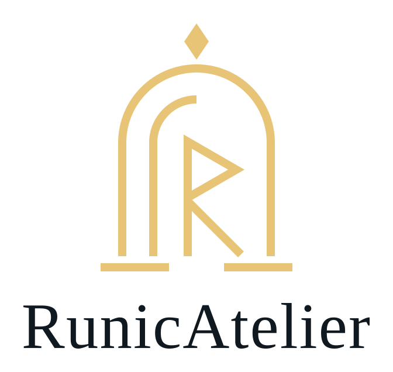
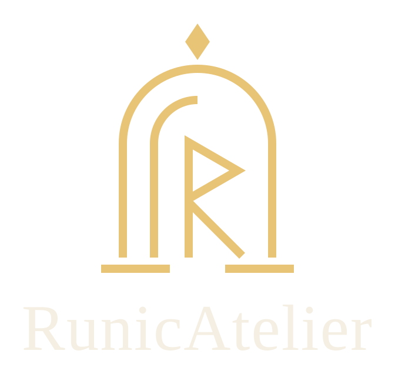
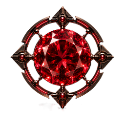
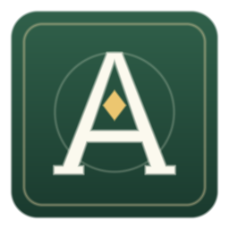

사람이 주인이 되는 기록과 세계
플랫폼이나 특정 AI에 종속되지 않도록, 평문 원본·출처·판본 이력을 사용자와 공동체 손에 오래 남깁니다.


INDEPENDENT ONE-PERSON SOFTWARE WORKSHOP
광고와 강제 구독 없이, 사람이 자기 기억과 세계의 주인이 되는 조용하고 단단한 도구를 깎아 만드는 1인 공방 룬 아뜰리에(Runic Atelier)입니다.
OUR PRINCIPLES
플랫폼이나 특정 AI에 종속되지 않도록, 평문 원본·출처·판본 이력을 사용자와 공동체 손에 오래 남깁니다.
강제 광고나 원치 않는 과금 대신, 1인 공방이 오래 책임지고 운영할 수 있는 단단하고 가벼운 구조를 설계합니다.
직접 쓰지 않아도 응원할 만한 의미를 지향하며, 왜 이런 선택을 했는지 고민과 시행착오까지 솔직하게 기록합니다.
PROJECTS
개인의 평생 기억을 지키는 서고부터, 여럿이 함께 짓는 판타지 세계와 나만의 선별 나침반까지.

사람이 자기 삶과 자신이 바라본 세계를 잃지 않도록 지켜 주는 평생의 개인 아카이브입니다. 감상·일기·메모를 특정 서비스에 가두지 않고 사용자 소유의 원본 서고로 보존하며, 5개 언어를 지원합니다.

마법과 종족, 생태와 법칙의 근거를 함께 토론하며 하나의 일관된 판타지 세계를 쌓아 올리는 무료 협업 위키 앱입니다. Steam 앱에서 자동 로그인으로 편집 제안과 토론에 참여하고, 누구나 웹에서 로그인 없이 감상할 수 있습니다.
평균 별점과 광고에 휘둘리지 않고, 나만의 가중치와 절대 거름 조건(강제 광고·확률형 아이템·불투명 크레딧 등)으로 앱·게임·AI 도구를 브라우저 안에서 바로 선별하는 정적 웹 나침반입니다.
MAKER & BUILD IN PUBLIC
룬 아뜰리에는 대학 마지막 학기를 보내고 있는 1인 개발자가 운영하는 작은 독립 공방입니다. 화려한 마케팅 문구 대신, 왜 이런 구조를 선택했고 어떤 시행착오를 겪었는지 개발 과정과 철학을 꾸준히 나누고 있습니다.
제품 제안, 버그 제보, 협업 문의, 혹은 그냥 응원 한마디까지 언제든 편하게 연락해 주세요.
개발 일지와 쇼케이스 영상, 오픈 리소스를 모아 두는 공간입니다.